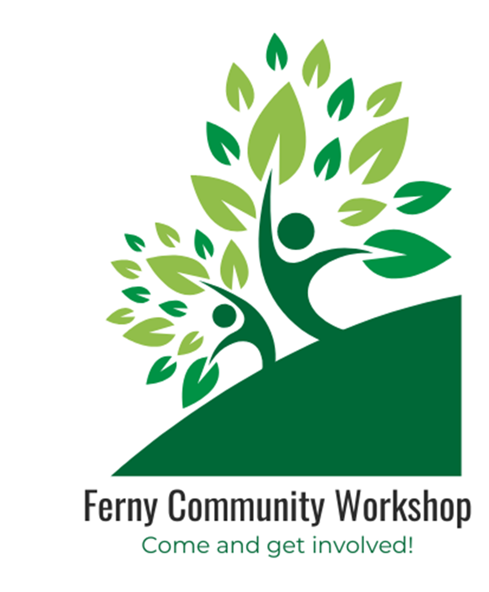
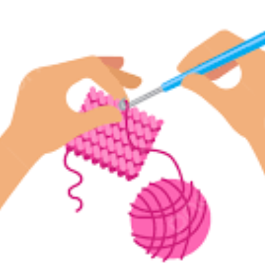
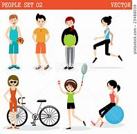
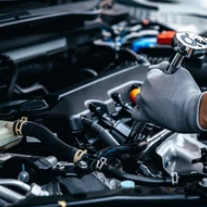
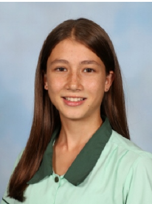
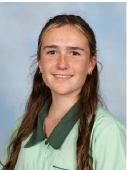

About
Our group is developing a service to bring the community together. Our vision is to hold a monthly community workshop at our school facilities. This will entail members of the community either holding or attending workshops to learn a variety of skills (e.g. new sports, knitting, changing a tire, gardening, etc). The demographic we are targeting includes all ages and abilities, replicating the community dynamic of multi-generational ages. This workshop will take place on the school grounds which is a great way to represent and appreciate our school, yet it could bring potential safety concerns. We endeavour for marketing to play a large role in the success of our project. We plan to advertise this through online social media platforms and posters around central community events and places. This event will provide the opportunity for community building and diversity, which we want to place a big importance on as we want it to reflect our school culture and key value of community which helps form the basis of success in the 21st Century learning environment. Finally, we want to keep the costs involved to a minimal by using a volunteer-based approach and utilising school equipment where possible helping keep this event free, ongoing, and fun!
Activities
Crocheting
This event is all inclusive, meaning everyone is welcome to come along! No matter your age, gender or skill level everyone is able to give it a go and have fun! It's not about who's the best, it's about learning a new skill that you can enjoy and look forward to. Don't be worried about your skill level as our courses are for beginners and we will help you and step you through the whole way. So come along and give it a go! I promise you its fun!
New sport
Learning a new sport will create a connected community by selecting a wide range of activities. Some of these activities include: baseball, soccer, and basketball whilst allowing people to get some exercise in while having fun.
Photography
Everyone is welcome! No matter your age or ability, we would love to have you come along and join in the experience. This opportunity is not only educational and fun, but it also teaches invaluable life skills that can benefit you in countless ways. We promise that you will leave feeling empowered and grateful for the knowledge and connections you've gained.
Car Maintenance
In this community workshop our friendly volunteers will teach you how to maintain your car. Lessons include; Changing a battery, Changing a tyre, checking engine oil and replacing it, changing your coolant, checking and replacing brake fluid, replacing spark plugs and the safe operation of jumper leads.
Group Members
Lara Wannenburgh
My role as team leader has included making sure everyone is productive, on track, and collaborative ensuring a positive team atmosphere which I believe is the best strategy to create the most effective project. Specifically I have worked on the documentation, brief, project plan, research, and surveys to guide our group whilst also designing all aspect of the photography workshop.
Anais Short
I'm Anais and my role in this project was to collaborate with my team members to create a community workshop for everyone. I focused on the crochet section which meant lots of research, surveys, designing posters, flow charts, mind maps, and also helping create a power point.
Elliot Alexander
My role in the group is the creation of a workshop that would give people in our community an opportunity to learn valuable life skills, such as the proper way to maintain your car and carry out simple repairs without needing to visit a mechanic.
Marty Blayney
My main role in the group is to create a website for the project. This includes designing what it will look like, and then coding it. My role is also to assist Elliot with creating a car maintenance activity.
Tristan Mitchell
My role in the group is to design a community event around learning new sports, and create advertising material for it.